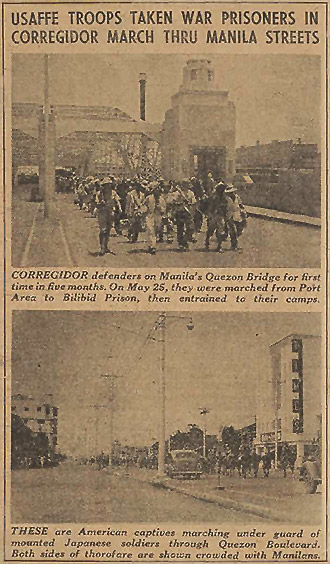

|
j
a v a s c r i p t |
May 24, 1942

POWs from Corregidor Passing Manila
Manila got a glimpse of 6,000 POWs from Corregidor marching through the streets on their way to Bilibid prison. They staggered-in all afternoon in groups of 400 to 500. I watched three groups pass at close range. Local basketball star Barnes was in one of the groups, looking as dirty as the rest and too frail to be an athlete. As he passed he recognized Nelling Nieto and gave him a smile as if to say, "Look at me now!" A few moments after George Ipekjian and his French wife arrived to watch the spectacle tears began to slowly stream down her face. All the prisoners were dirty, unshaven, and perspiring freely in the heat of the day. Japanese guards accompanied them on USAFFE horses. One of them caught me smiling back at one of the prisoners, gave me a look of daggers and seemed to be on the verge of getting off his nag to go after me. I got the impression one prisoner who smiled meaningfully may have known me. At the end of the line came the inevitable truck with four Americans who had clearly collapsed a short time before. One of them was bearded and looked so old and defeated that Maurice and I felt he was through with life. He kept dabbling at his eyes, as if trying to stem the flow of tears. Mrs. Ipekjian had wisely put on her dark sunglasses by that time. As Maurice and I discussed it this evening, Ma burst out crying; which reminds me that a girlfriend of mine told me she found herself crying too when she saw photos of Singapore POWs in the papers. Well, that's three people crying in one day, and the occupation has just started. |
|
|
|
|